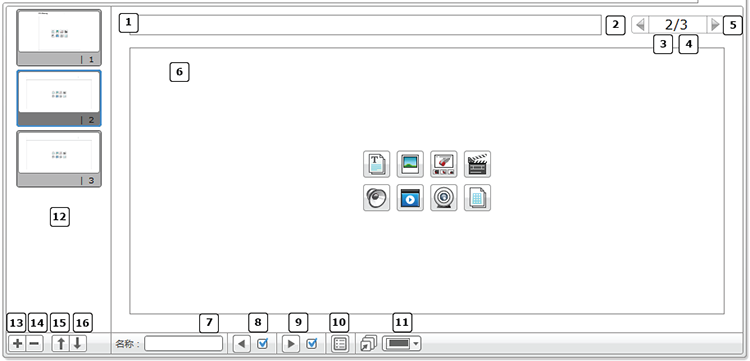
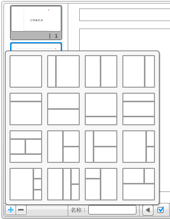
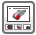
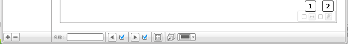
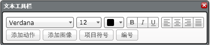
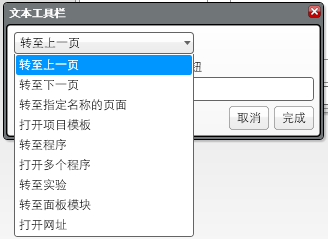
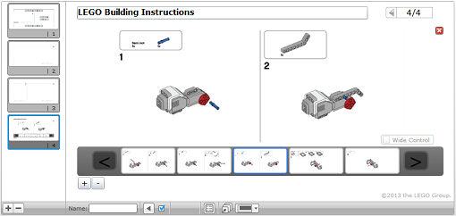

					<table cellpadding="0" cellspacing="0" border="0"><tbody><tr><td>
	
						<h1>内容编辑器<a name="top"></a></h1>
		<div id="block_1329" class="block blockHeader">
				<div class="description">内容编辑器用于向项目添加说明。可以创建容纳描述、照片、视频甚至是构建指令的页面。每个页面可以使用不同布局自定义，可以自动执行一系列动作，如打开特定程序或突出显示特定编程模块。</div>
			</div>
	<div id="block_1376" class="block blockStep">
		<div class="title"></div>
		<div class="description"> 打开内容编辑器以开始使用。<br>
<br>
 选择<a href="./index.html?id=ContentEditor#ContentEditorToggleViewEditMode">编辑模式</a>以开始编辑。<br>
<br>
 在完成编辑之后关闭内容编辑器。</div>
	</div>
	<div id="block_491" class="block blockChaptor">
		<div class="title"><a name="ContentEditorToggleViewEditMode" style="position:relative; top:-10px;"></a>编辑模式</div>
		<div class="description">编辑模式使您可以查看或编辑活动。<br>
<br>
<br>
</div>
	</div>
	<div id="block_492" class="block blockTable bullets">
		<table class="blockTable">
		
<tbody><tr><td></td><td>页面标题 </td></tr><tr><td></td><td>上一页 </td></tr><tr><td></td><td>当前页码 </td></tr><tr><td></td><td>总页数 </td></tr><tr><td></td><td>下一页 </td></tr><tr><td></td><td><a href="./index.html?id=ContentEditor#PageArea">页面区域</a> </td></tr><tr><td></td><td>页面名称： 用于幻灯片之间的链接</td></tr><tr><td></td><td>显示“上一页”按钮 （仅在使用多个页面时可见）</td></tr><tr><td></td><td>显示“下一页”按钮 （仅在使用多个页面时可见）</td></tr><tr><td></td><td><a href="./index.html?id=ContentEditor#ContentEditorSlideAction">页面操作</a> </td></tr><tr><td></td><td><a href="./index.html?id=ContentEditor#ContentEditorSlideFormatPicker">选择页面格式</a> </td></tr><tr><td></td><td>页面略图 </td></tr><tr><td></td><td>添加页面 </td></tr><tr><td></td><td>删除页面 </td></tr><tr><td></td><td>上移页面 </td></tr><tr><td></td><td>下移页面 </td></tr>		</tbody></table>
	</div>
	<div id="block_498" class="block blockChaptor">
		<div class="title"><a name="AddRemovePages" style="position:relative; top:-10px;"></a>添加和删除页面</div>
		<div class="description">单击“添加页面”(+) 可添加新页面，然后选择模板。<br>
  <br>
单击“删除页面”(－) 可删除所选页面。<br>
<br>
</div>
	</div>
	<div id="block_501" class="block blockChaptor">
		<div class="title"><a name="PageArea" style="position:relative; top:-10px;"></a>页面区域</div>
		<div class="description">自定义模板的每个部分以显示一种或多种媒体类型。</div>
	</div>
	<div id="block_1380" class="block blockTable ">
		<table class="blockTable">
		

			<tbody><tr>
<th>媒体类型</th><th>备注</th>			</tr>
<tr><td> 文本</td><td>请参见<a href="./index.html?id=ContentEditor#ContentEditorSlideTypePickerText">文本</a>部分。</td></tr><tr><td> 图像 <a name="ContentEditorSlideTypePickerImage" style="position:relative; top:-10px;"></a></td><td>添加图像（PNG 或 JPG 格式）。</td></tr><tr><td> 构建指令</td><td>请参见<a href="./index.html?id=ContentEditor#ContentEditorSlideTypePickerBuildingInstruction">构建指令</a>部分。</td></tr><tr><td> 视频 <a name="ContentEditorSlideTypePickerVideo" style="position:relative; top:-10px;"></a></td><td>选择视频文件和封面图像。</td></tr><tr><td> 声音 <a name="ContentEditorSlideTypePickerSound" style="position:relative; top:-10px;"></a></td><td>添加声音文件。</td></tr><tr><td> 添加说明 <a name="ContentEditorSlideTypePickerDocument" style="position:relative; top:-10px;"></a></td><td>这可以是用于为项目添加说明的文本、视频、声音或摄像头图像。</td></tr><tr><td> 摄像头 <a name="ContentEditorSlideTypePickerWebcam" style="position:relative; top:-10px;"></a></td><td>使用连接的摄像头拍摄照片。</td></tr><tr><td> 表格 <a name="ContentEditorSlideTypePickerTable" style="position:relative; top:-10px;"></a></td><td>根据需要添加和删除列与行。</td></tr>		</tbody></table>
	</div>
	<div id="block_506" class="block blockStep">
		<div class="title"></div>
		<div class="description">页面区域中的每个部分都具有两个附加选项。<br>
<br>
<br>
</div>
	</div>
	<div id="block_507" class="block blockTable bullets">
		<table class="blockTable">
		
<tbody><tr><td> <a name="ContentEditorWideControlOption" style="position:relative; top:-10px;"></a></td><td>宽控件： 此设置允许在内容宽于页面时水平滚动内容。</td></tr><tr><td> <a name="ContentEditorUserEditableOption" style="position:relative; top:-10px;"></a></td><td>用户可编辑： 启用此选项可允许在“视图”模式中编辑部分。</td></tr>		</tbody></table>
	</div>
	<div id="block_508" class="block blockChaptor">
		<div class="title"><a name="ContentEditorSlideTypePickerText" style="position:relative; top:-10px;"></a>文本</div>
		<div class="description">可以使用不同字体、大小、颜色和样式自定义编写的文本。还可以设置文本格式以便在单击它们时使用图像执行动作并创建编号/项目符号列表。 <br>
<br>
</div>
	</div>
	<div id="block_510" class="block blockChaptor">
		<div class="title"><a name="TextActions" style="position:relative; top:-10px;"></a>文本动作</div>
		<div class="description">单击“添加动作”可插入自定义动作。动作可以链接到文本、文本按钮或图像按钮。当单击链接的文本、按钮或图像时，会执行以下动作之一，如此下拉菜单所示。<br>
<br>
</div>
	</div>
	<div id="block_515" class="block blockChaptor">
		<div class="title"><a name="ContentEditorSlideAction" style="position:relative; top:-10px;"></a>页面操作</div>
		<div class="description">当打开页面时，可以自动触发操作。可以将此操作分配给页面。</div>
	</div>
	<div id="block_516" class="block blockTable bullets">
		<table class="blockTable">
		
<tbody><tr><td>-</td><td>无：显示内容 </td></tr><tr><td>-</td><td>转至程序：打开指定程序 </td></tr><tr><td>-</td><td>打开多个程序 </td></tr><tr><td>-</td><td>转至实验 </td></tr><tr><td>-</td><td>打开网址 </td></tr>		</tbody></table>
	</div>
	<div id="block_519" class="block blockChaptor">
		<div class="title"><a name="ContentEditorSlideFormatPicker" style="position:relative; top:-10px;"></a>选择页面格式</div>
		<div class="description">“选择页面格式”用于定义页面大小。每个页面可以具有自己的页面格式。</div>
	</div>
	<div id="block_521" class="block blockChaptor">
		<div class="title"><a name="ContentEditorSlideTypePickerBuildingInstruction" style="position:relative; top:-10px;"></a>构建指令</div>
		<div class="description">“构建指令”用于将多步骤构建指令插入内容编辑器中。在内容编辑器中使用之前，构建指令必须先创建为各个 JPG 或 PNG 图像。  <br>
<br>
使用“＋”和“－”按钮可插入和删除图像。悬停在主图像上方可展现用于向左或向右移动步骤的控件。单击双箭头可在序列中向前或向后移动图像。<br>
<br>
</div>
	</div>
	
			<div id="quick">
				<div class="header"><a href="./index.html?id=ContentEditor#header">内容编辑器</a></div>
					<div class="quickText">快速链接</div>
					
					<ul>
	<li><a href="./index.html?id=ContentEditor#ContentEditorToggleViewEditMode">编辑模式</a></li><li><a href="./index.html?id=ContentEditor#AddRemovePages">添加和删除页面</a></li><li><a href="./index.html?id=ContentEditor#PageArea">页面区域</a></li><li><a href="./index.html?id=ContentEditor#ContentEditorSlideTypePickerText">文本</a></li><li><a href="./index.html?id=ContentEditor#TextActions">文本动作</a></li><li><a href="./index.html?id=ContentEditor#ContentEditorSlideAction">页面操作</a></li><li><a href="./index.html?id=ContentEditor#ContentEditorSlideFormatPicker">选择页面格式 </a></li><li><a href="./index.html?id=ContentEditor#ContentEditorSlideTypePickerBuildingInstruction">构建指令</a></li>					</ul>
			</div>
	
	</td></tr></tbody></table>